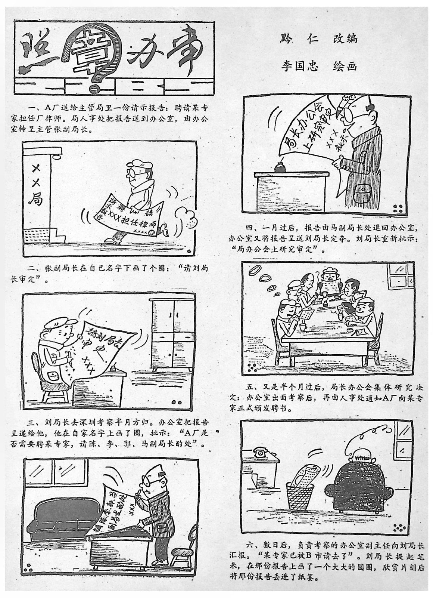

李国忠绘画；黔仁改编 《人事》1987年第5期（总第20期），封三
照章办事
Going by the Rules
- Text in the drawing
- 请示 聘请XXX担任律师 / ××局 / 请刘局长审定 / 请陈、李、郭、马副局长酌处 / 局长办公会上研究审定 XXX 批示
Request for instructions: hiring XXX as legal counsel / XX Bureau / For Bureau Chief Liu to review and decide / For Deputy Chiefs Chen, Li, Guo and Ma to consider / To be discussed and decided at the bureau chiefs' meeting — XXX, instruction - Panel text
- 一、A厂送给主管局里一份请示报告：聘请某专家担任厂律师。局人事处把报告送到办公室，由办公室转呈主管张副局长。
1. Factory A sent its supervising bureau a request for instructions: to hire a certain expert as the factory's lawyer. The bureau's personnel division passed the report to the general office, which forwarded it to the deputy chief in charge, Zhang. - 二、张副局长在自己名字下画了个圈：“请刘局长审定”。
2. Deputy Chief Zhang drew a circle under his own name: “For Bureau Chief Liu to review and decide.” - 三、刘局长去深圳考察半月方归。办公室把报告呈递给他，他在自家名字上画了圈，批示：“A厂是否需要聘某专家，请陈、李、郭、马副局长酌处”。
3. Bureau Chief Liu returned only after half a month's study tour in Shenzhen. When the office handed him the report, he drew a circle on his own name and wrote: “Whether Factory A needs to hire this expert — for Deputy Chiefs Chen, Li, Guo and Ma to consider.” - 四、一月过后，报告由马副局长处退回办公室，办公室又将报告呈送刘局长定夺。刘局长重新批示：“局办公会上研究审定”。
4. A month later the report came back to the office from Deputy Chief Ma, and the office sent it up to Bureau Chief Liu again for a decision. Liu wrote a new instruction: “To be discussed and decided at the bureau chiefs' meeting.” - 五、又是半个月过后，局长办公会集体研究决定：办公室出面考察后，再由人事处通知A厂向某专家正式颁发聘书。
5. Another half month later, the bureau chiefs' meeting collectively decided: after the office had evaluated him, the personnel division would notify Factory A to issue the expert a formal letter of appointment. - 六、数日后，负责考察的办公室副主任向刘局长汇报。“某专家已被B市请去了”。刘局长提起笔来，在那份报告上画了一个大大的圆圈，欣赏片刻后将那份报告丢进了纸篓。
6. A few days later the deputy office director in charge of the evaluation reported to Bureau Chief Liu: “The expert has already been hired by City B.” Liu picked up his pen, drew a great big circle on the report, admired it for a moment, and tossed the report into the wastebasket.
- 一、A厂送给主管局里一份请示报告：聘请某专家担任厂律师。局人事处把报告送到办公室，由办公室转呈主管张副局长。
- Description
- Six-panel picture story: a factory's request to hire an expert as its lawyer is circled, forwarded and re-referred from one bureau chief to another for two months; by the time the bureau decides to hire him, he has gone to another city, and the chief draws one last big circle on the request and drops it in the wastebasket.
- Note
- 画圈, drawing a circle beside one's name, was how a leader marked a document as read without committing to anything. In the title the character 章 (rules) sits inside a question mark.
- Artists
- Li Guozhong 李国忠 (drawn); Qian Ren 黔仁 (adapted)
- Published in
- 《人事》1987年第5期（总第20期）, inside back cover
- Themes
- Paperwork and documents · Bureaucratism · Talent and its neglect · Picture stories (连环画)

Cite
Li Guozhong and Qian Ren, “照章办事” [Going by the Rules], Renshi (Personnel) 《人事》, 1987, no. 5, inside back cover.